Planète
Uranus, le monde couché
La huitième et dernière planète des dieux. La touche divine d'Uranus ouvre la Voie d'Uranus : la planète d'Ouranos, le ciel lui-même, la voûte étoilée qui reposait sur la terre - et la planète qui a roulé sur le flanc, ses pôles là où les autres ont leur équateur, ses anneaux dressés sur la tranche. Sous un ciel bleu-vert où les étoiles se voient en plein jour, un soleil minuscule tout en haut, la brume de méthane cyan à l'horizon, on arrive sous l'arche du dieu étoilé, face à dix anneaux qui sortent de la glace et montent à près de trois cents blocs.

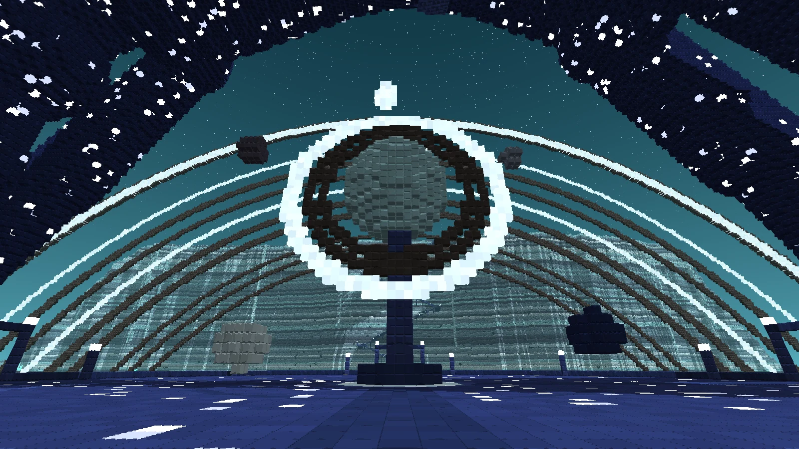
(agrandir l'image)
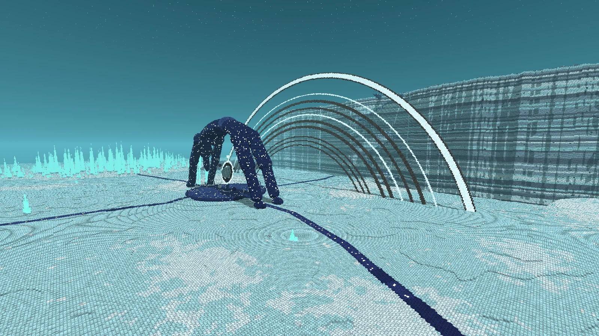
(agrandir l'image)
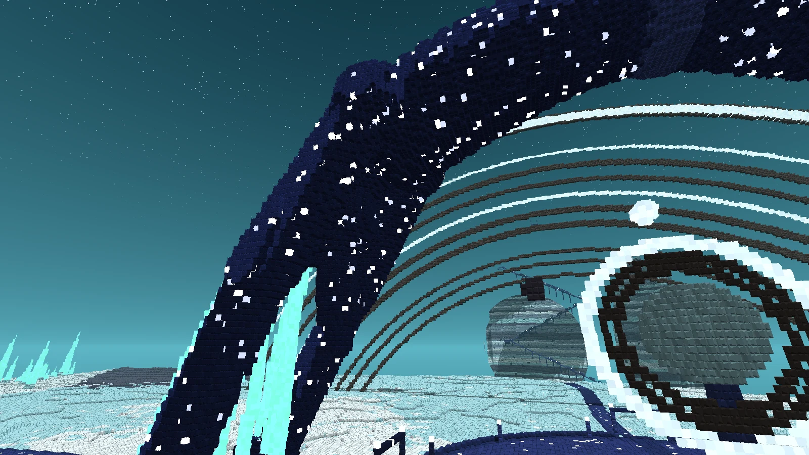
(agrandir l'image)
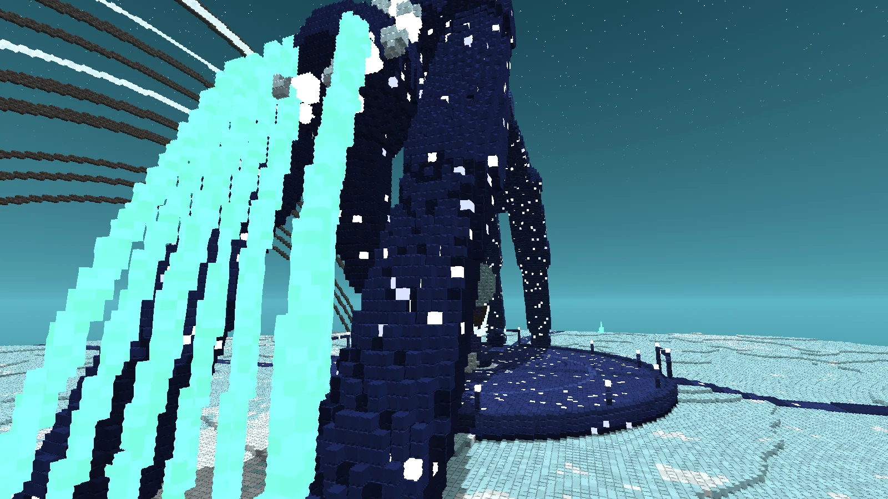
(agrandir l'image)Le voyage
- Les mêmes règles que pour les autres planètes : une fois par jour de jeu, cinq minutes au plus, le compte à rebours en haut à gauche, les invités par [Rejoindre], la touche divine pour rentrer plus tôt.
- On y pèse presque son poids (0,89) : rien ne change sous les pieds - c'est le monde qui est couché, pas vous.
- L'arrivée : dans le sanctuaire d'Ouranos, au sud de l'orrery, face au nord : le dieu arqué au-dessus de vous, les anneaux derrière lui, la falaise de Vérone au fond. Quatre routes partent des portes : au nord vers l'escalier de Prospero, à l'ouest vers la forêt d'aurore, à l'est vers Inverness, au sud vers Arden.
La planète
Uranus n'a pas de sol : la planète prête le sien à ses lunes. La même dans tous les mondes, elle mêle ce que la sonde Voyager 2 a vu de Miranda, Ariel, Umbriel, Titania et Obéron - et l'imagine, sous la glace, comme les physiciens imaginent l'intérieur d'Uranus : une glace si comprimée qu'elle luit, et du carbone qui y tombe en pluie de diamants.
| Lieu | Où (x, z) | Ce qu'on y trouve |
|---|---|---|
| Le sanctuaire d'Ouranos et l'arche du dieu | 0, 0 | Une place ronde de pierre de la Voûte - la nuit faite pierre - semée d'étoiles serties qui scintillent, quatre portes, douze fanaux. Au-dessus, Ouranos lui-même, arqué comme le ciel au-dessus de la terre : ses mains posées au sol à l'ouest, ses pieds à l'est, son dos à quatre-vingt-dix blocs, son corps de nuit constellé, ses yeux deux étoiles, un diadème d'étoiles et d'ouranite autour de la tête, sa chevelure d'aurore qui tombe jusqu'au sol - écartée pour laisser passer la route. Au centre, une orrery d'Uranus : la planète de glace, ses anneaux dressés, ses cinq grandes lunes |
| Les anneaux | Au nord du sanctuaire | Les dix anneaux d'Uranus - 6, 5, 4, alpha, bêta, êta, gamma, delta, lambda et le grand epsilon, le plus large et le plus brillant - dressés sur la tranche, sortant de la glace à l'est et à l'ouest, penchés vers l'arrière comme la planète : des arches de 150 à 270 blocs de rayon, l'une dans l'autre, de pierre des anneaux sombre et de glace d'epsilon lumineuse. On peut marcher sur leur sommet |
| Verona Rupes et le gouffre | -560 à 560, -430 | Le haut plateau de Miranda, une dalle de la croûte basculée jusqu'à ce que son bord se dresse : la plus haute falaise du système solaire, deux cent cinquante blocs à pic, rayée de strates de glace et de roche sombre, veinée de carbone, des cascades gelées dans sa face. À son pied, un gouffre au fond de glace superionique qui luit et de lits de grêle de diamant |
| L'escalier de Prospero, le Plongeoir et le Belvédère | -58 à 58, -430 | Un escalier accroché à la face de la falaise, deux voies de demi-marches en zigzag sur deux cent cinquante blocs, un palier à chaque tour, un parapet et ses fanaux tout du long - une ligne de lumières qui monte la nuit. En haut, la dernière volée taillée dans la roche, le Belvédère (un cercle de colonnes), et le Plongeoir : un ponton qui s'avance de vingt-huit blocs au-dessus du vide, la Porte du Vide au bout. Juste en dessous, au fond du gouffre, une cuvette de grêle |
| La forêt d'aurore | -560, 40 | Des centaines d'aiguilles de cristal d'aurore, de dix à quatre-vingts blocs, toutes penchées du même côté - comme tout sur Uranus -, sur une neige d'ammoniac où poussent les asters de givre |
| Les coronae d'Inverness et d'Arden | 560, 120 ; -80, 640 | De grands ovales de glace sillonnés comme une piste de course, bandes claires et sombres ; à travers Inverness, le chevron blanc |
| Wunda | -420, -260 | Un vieux cratère sombre dans les terres sombres d'Umbriel, et sur son fond un anneau blanc de grêle de diamant |
| Messina Chasmata, Cordélia, le pic d'Obéron | Sud-est, nord-est, sud-ouest | Un rift de Titania entre deux failles ; une cuvette pavée de grêlons ; une montagne de cent vingt blocs |
Partout la glace de méthane cyan, la neige d'ammoniac dans les creux, la pierre d'Umbriel sombre sur les pentes ; sous tout cela, à quarante blocs de profondeur, la glace superionique, noire et luisante, et le carbone épais.
Les créatures
Deux, et elles seules. La planète les fait venir autour de chaque visiteur - en créatif aussi : cinq Hécatonchires au plus au sol et huit raies dans le ciel, aucune en Paisible. Aucune n'entre dans le sanctuaire.
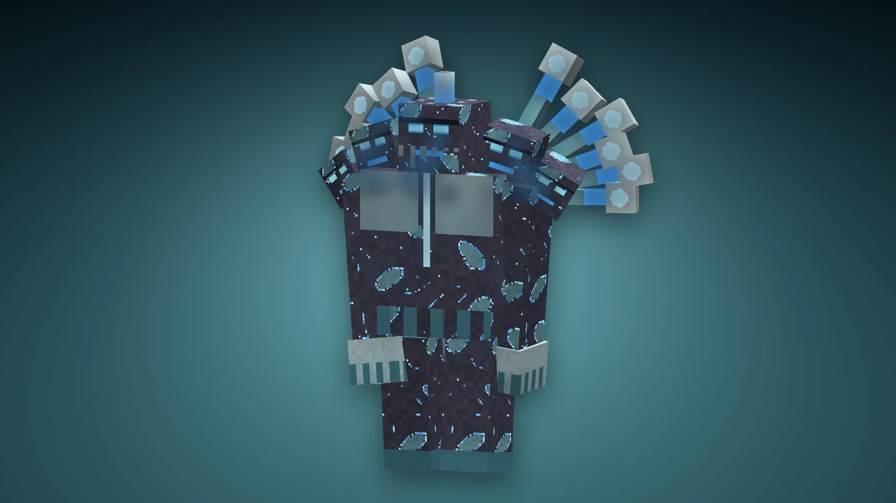
(agrandir l'image)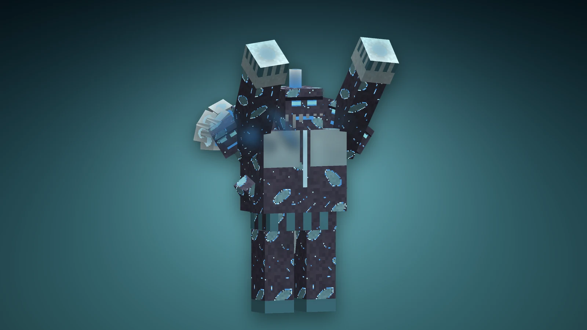
(agrandir l'image)Hécatonchire
- Vie
- 120
- Dégâts
- 13 (12 en frappe double, 8 par roc)
Un des Cent-Bras, fils d'Ouranos et de Gaïa, que leur père cacha au fond de la terre. Un géant de près de quatre blocs, de roche sombre couverte de glace, cinq têtes, deux grands bras, deux petits, et dans le dos un éventail de douze bras aux paumes allumées. Lent, inébranlable. De près, ses poings ; de temps en temps, il les abat ensemble : la frappe double blesse et projette tout à cinq blocs. De loin, il arrache des rocs de glace et en lance trois d'un coup, en cloche, qui gèlent ce qu'ils touchent.
Butin 1 à 2 phalanges d'Hécatonchire, 0 à 3 nodules de carbone
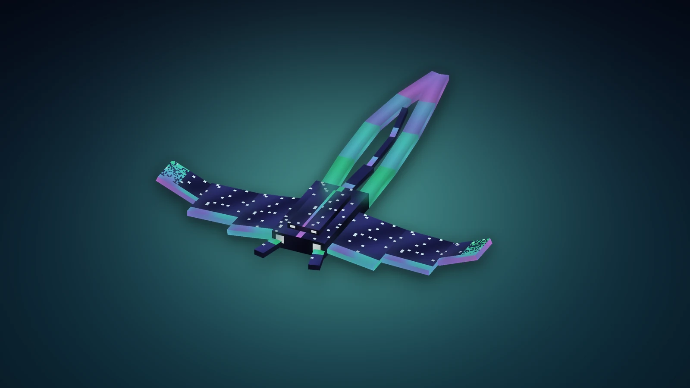
(agrandir l'image)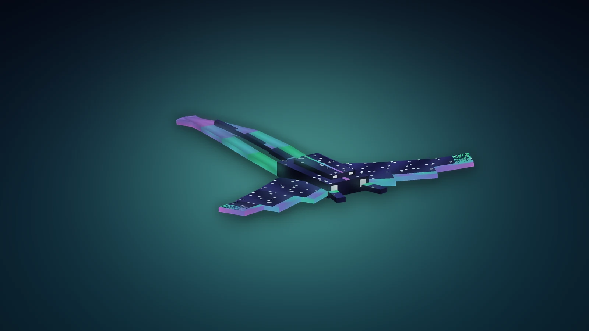
(agrandir l'image)Raie d'aurore
- Vie
- 44
- Dégâts
- 7
Une raie de cinq blocs d'envergure, le dos bleu nuit semé de lumières, le bord des ailes et deux longs rubans d'aurore. Elle tourne lentement dans le ciel et ne s'occupe de personne - jusqu'à ce qu'on la frappe. Alors elle pique sur vous et, au contact, se décharge : la lumière de l'aurore vous traverse, vous ralentit et vous laisse luisant dix secondes. Elle remonte, se retourne, repique - trois fois, puis elle oublie.
Butin 1 à 3 voiles d'aurore ; 3 fois sur 10, un grêlon d'ouranite


Le Butin augmente les phalanges et les voiles. Tuées par un joueur, elles ont aussi 5 % de chances de laisser une Cuirasse du Firmament ou des Solerets de Grêle : c'est la seule façon de les avoir.
L'ouranite : ce qui tombe en diamant
Au fond d'Uranus, le carbone du méthane, écrasé, cristallise et tombe en pluie de diamants. Sur la planète des dieux, c'est la règle :
- Le carbone. La glace carbonée, noire de nodules, est partout dans la roche, épaisse au fond des gouffres, dans la glace superionique et dans la face de Vérone (pioche en fer). Elle donne des nodules de carbone.
- La chute. Un nodule qui tombe de 64 blocs ou plus touche le sol en grêlon d'ouranite - jetez-le du haut du Plongeoir, deux cent cinquante blocs, et allez le ramasser dans la cuvette. Ça marche partout, chez vous aussi : une tour, une falaise, le bord d'une île suffit. Le lanceur voit de combien il est tombé.
- La taille. Quatre grêlons font une ouranite taillée.
Deux raccourcis sur Uranus : les averses de diamants - de temps en temps le ciel scintille autour de vous et des grêlons tombent çà et là pendant un quart de minute - et les lits de grêle du gouffre, de Cordélia et de Wunda, qui rendent 1 à 2 grêlons (Fortune en donne plus).
Les blocs
| Bloc | Où | Outil |
|---|---|---|
| Glace de méthane, Neige d'ammoniac, Pierre d'Umbriel, Strates de Vérone, Glace de corona | Le sol, les creux, les pentes, la falaise, les coronae | Pioche ; pelle |
| Glace superionique | Les profondeurs, le fond du gouffre. Luit (lumière 6) | Pioche en fer |
| Glace carbonée | Partout dans la roche, épaisse en profondeur et dans Vérone | Pioche en fer |
| Lit de grêle | Le gouffre, Cordélia, l'anneau de Wunda. Scintille ; 1 à 2 grêlons | Pioche |
| Pierre des anneaux, Glace d'epsilon | Les anneaux. L'epsilon luit (lumière 8) | Pioche |
| Cristal d'aurore | La forêt. Passe par toutes ses couleurs ; lumière 12 | Pioche |
| Pierre de la Voûte, polie, briques, escalier, dalle, muret, colonne, gravée (le signe d'Uranus), Étoile sertie | Le sanctuaire, le dieu, l'escalier | Pioche |
| Bloc d'ouranite | L'orrery, le diadème. Base de balise | Pioche en fer |
| Fanal d'Uranus, Aster de givre | Le sanctuaire et l'escalier ; la neige de la forêt | Pioche ; à la main |
Ouranite taillée
Quatre grêlons, taillés en une gemme : le « lingot » d'Uranus. Neuf font un bloc d'ouranite, base de balise ; l'ouranite paie les balises.
Pierre de la Voûte
La nuit faite pierre : la pierre sombre d'Umbriel autour d'un grêlon, et les étoiles y apparaissent. Polie (4), en briques, en colonne, en escalier, dalle et muret - au tailleur de pierre aussi.
Étoile sertie
Une étoile dans la pierre de la Voûte, qui scintille. Lumière 13.
Fanal d'Uranus
Une petite Uranus de glace allumée sur sa tige, son anneau dressé autour d'elle et penché comme le sien. Lumière 15.
Cristal d'aurore
L'aurore figée : un bloc qui passe lentement par toutes les couleurs de l'aurore. Lumière 12.
La Vêture du Firmament
Ouranos est le ciel, son corps est la nuit et les étoiles qui y sont : la Vêture aussi. Des plaques d'émail bleu nuit semées d'étoiles, la Grande Ourse tracée en argent sur la poitrine, cerclées d'argent ; de l'ouranite partout où il faut une gemme. La Couronne des Anneaux : un bandeau d'argent, cinq pointes, une étoile qui scintille au bout de chacune, et autour de la tête les anneaux d'Uranus dressés sur la tranche, trois petites lunes qui tournent autour. La Cuirasse : l'ouranite au sternum, les étoiles qui brillent, des cristaux d'ouranite qui poussent des épaules, allumés de l'intérieur, et un anneau incliné autour du corps, qui tourne lentement, deux lunes dessus. Les Tassettes d'Aurore : de la ceinture pend l'aurore en rideaux qui ondulent - et qui flottent en arrière quand vous courez. Les Solerets de Grêle : des écailles de nuit, des éclats d'ouranite le long des tibias.
| Pièce | Armure | Durabilité | Comment l'avoir |
|---|---|---|---|
| Couronne des Anneaux | 3 | 407 | Artisanat : 3 ouranites et 2 voiles d'aurore |
| Cuirasse du Firmament | 8 | 592 | Butin des créatures d'Uranus : aucune recette |
| Tassettes d'Aurore | 6 | 555 | Artisanat : 5 ouranites et 2 voiles d'aurore |
| Solerets de Grêle | 3 | 481 | Butin des créatures d'Uranus : aucune recette |
Chaque pièce : robustesse 3,5 - la plus dure des armures des planètes -, résistance au recul 1,2, enchantabilité 12, réparable à l'ouranite. Les quatre portées ensemble :
- Le monde couché : avancez contre un mur, vous y montez comme à une échelle ; accroupi contre lui, vous y restez accroché.
- La chute d'étoile : une chute qui vous blesserait ne vous fait que moitié mal - et l'autre moitié, doublée, frappe tout ce qui vous entoure à 5 blocs quand vous touchez le sol, dans un éclat de lumière. Montez un mur, sautez sur eux.
Le Fléau des Lunes et la Lunette d'Herschel
Fléau des Lunes
Une tête d'ouranite - une petite Uranus et son anneau - au bout d'une chaîne, un manche taillé dans un os de géant : 11 dégâts, lent (1 coup par seconde), 2100 de durabilité. Clic droit : les cinq lunes d'Uranus - Miranda, Ariel, Umbriel, Titania, Obéron - viennent tourner autour de vous pendant 10 secondes, chacune sur son orbite, les plus proches plus vite, sur un plan presque couché qui tourne lentement sur lui-même. Chaque lune qui traverse une créature la frappe (6) et la rejette de côté, dans le sens de son orbite - et peut la refrapper une seconde plus tard. 20 secondes de recharge.
Lunette d'Herschel
L'instrument qui découvrit Uranus - William Herschel, dans son jardin de Bath, le 13 mars 1781 - : un long tube émaillé de nuit cerclé de cuivre, son miroir d'ouranite. Gardez le clic droit 1,5 seconde en visant un endroit jusqu'à 96 blocs : une étoile filante sort du ciel et s'y abat - 14 dégâts à 3 blocs autour, vous exceptés, rien n'est cassé - et une fois sur quatre, ce qu'elle laisse dans son cratère est un grêlon d'ouranite. 30 secondes de recharge.
Toute la galerie 15 images de plus

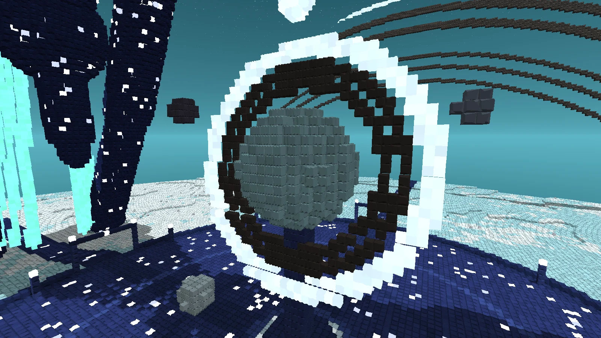
(agrandir l'image)
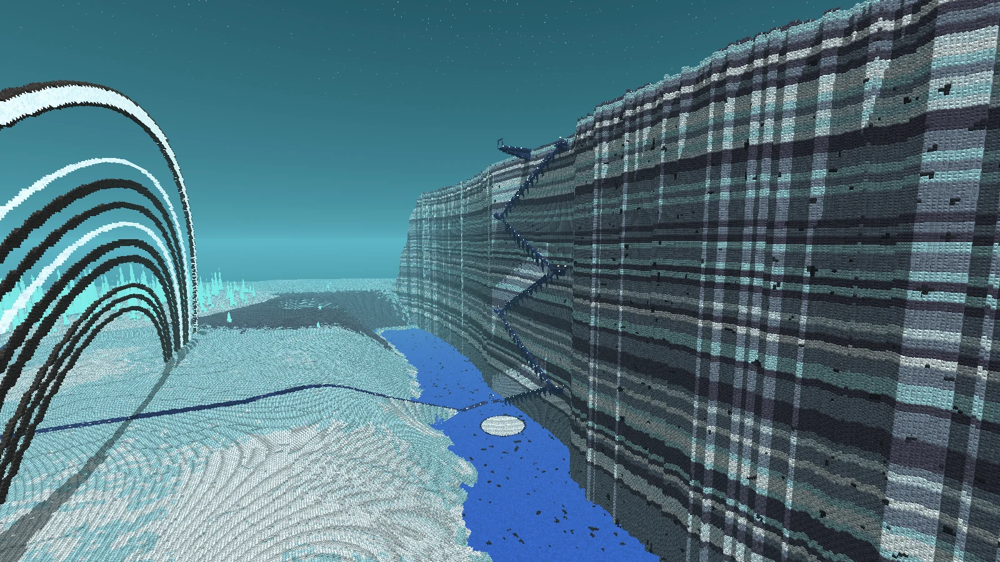
(agrandir l'image)
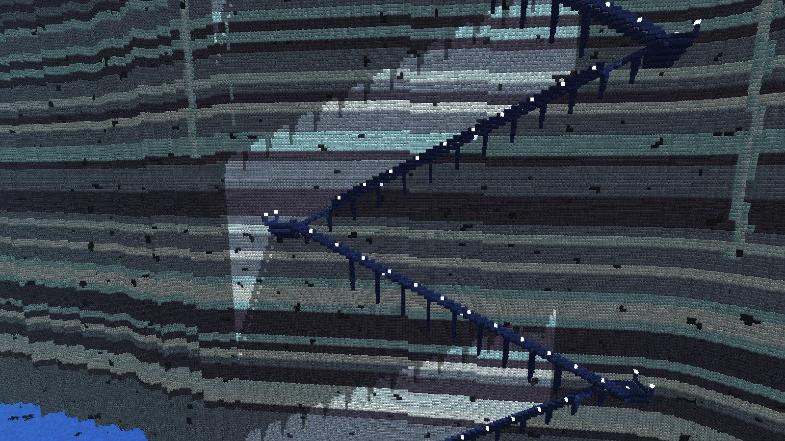
(agrandir l'image)
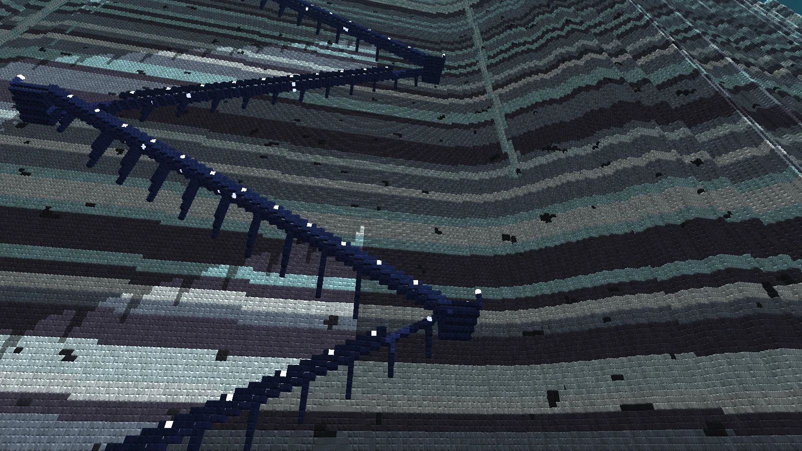
(agrandir l'image)
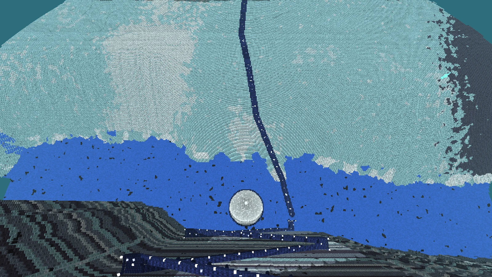
(agrandir l'image)
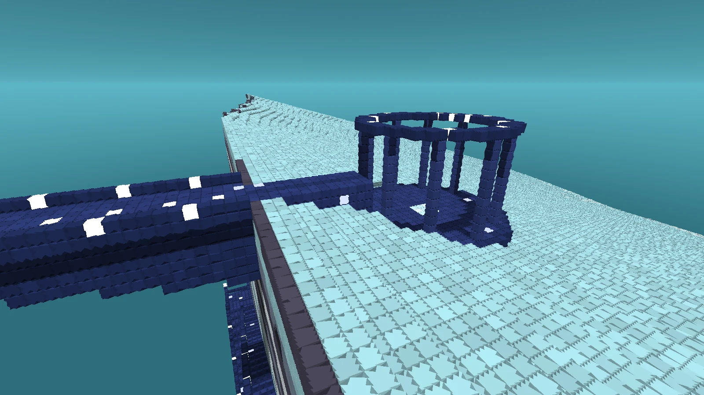
(agrandir l'image)
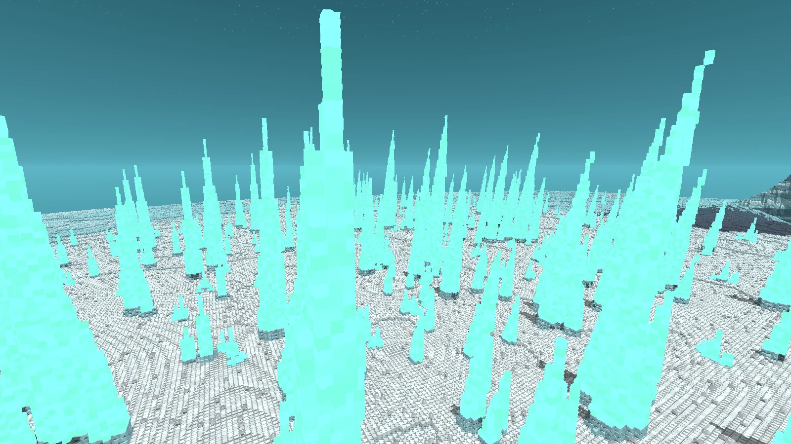
(agrandir l'image)
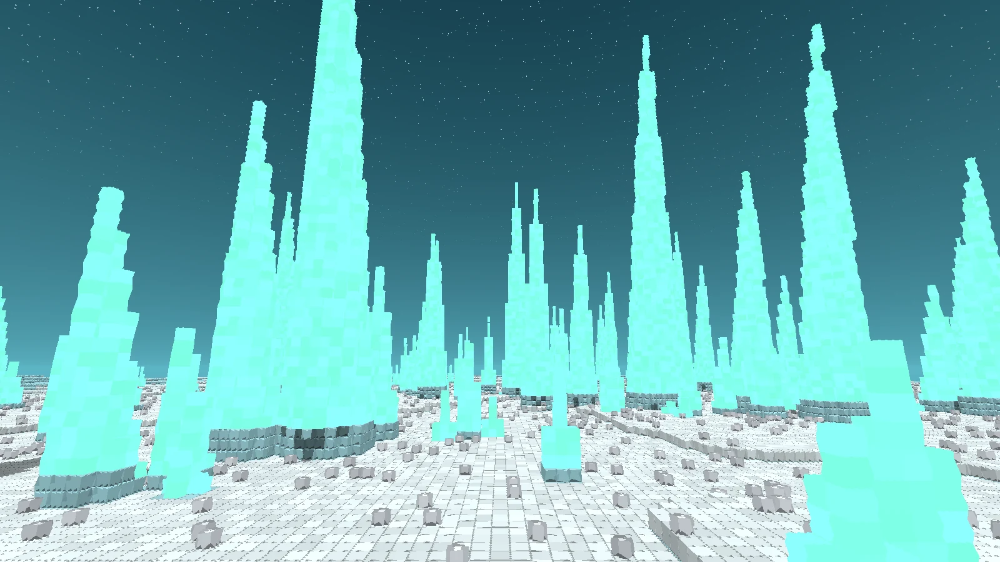
(agrandir l'image)
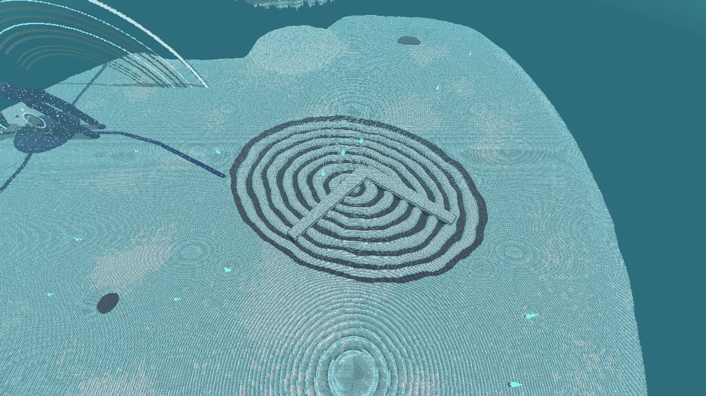
(agrandir l'image)
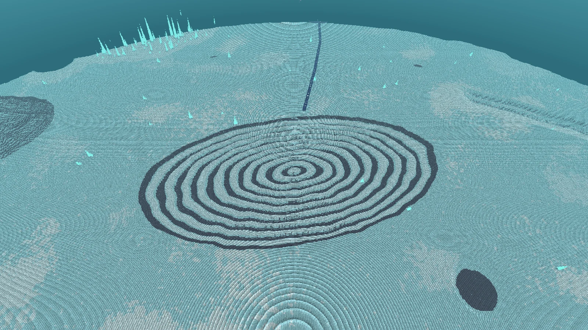
(agrandir l'image)
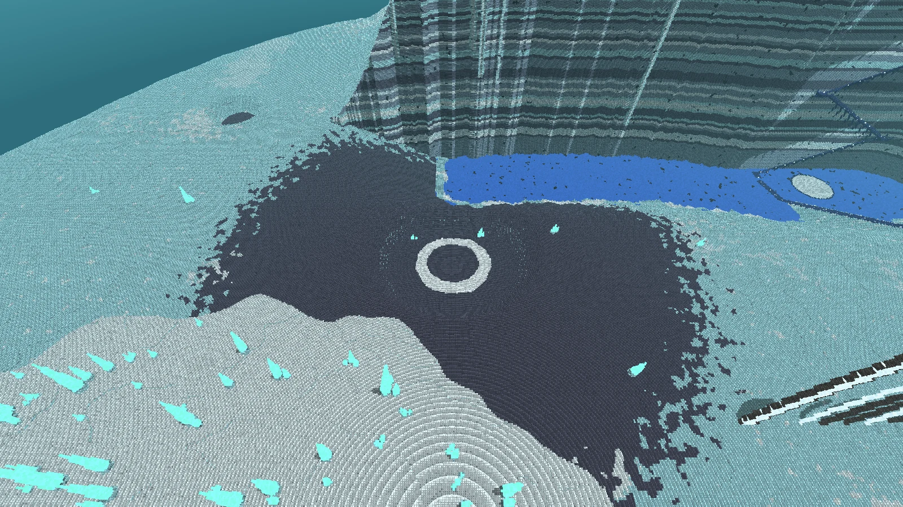
(agrandir l'image)
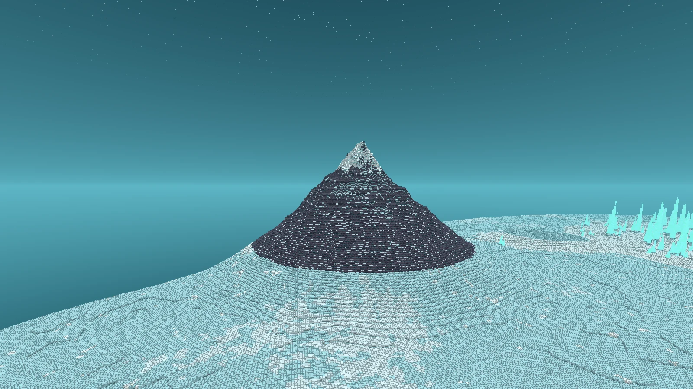
(agrandir l'image)
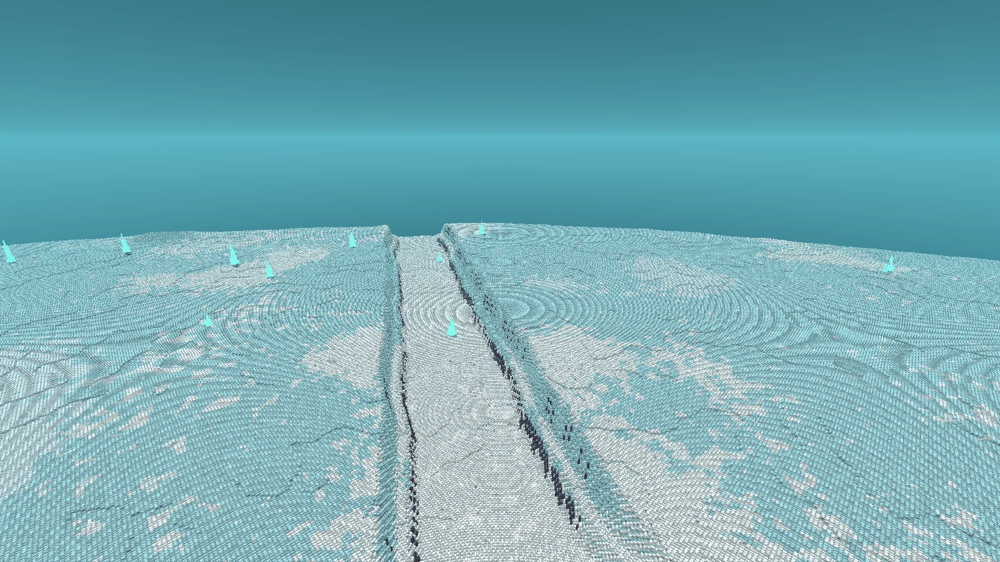
(agrandir l'image)
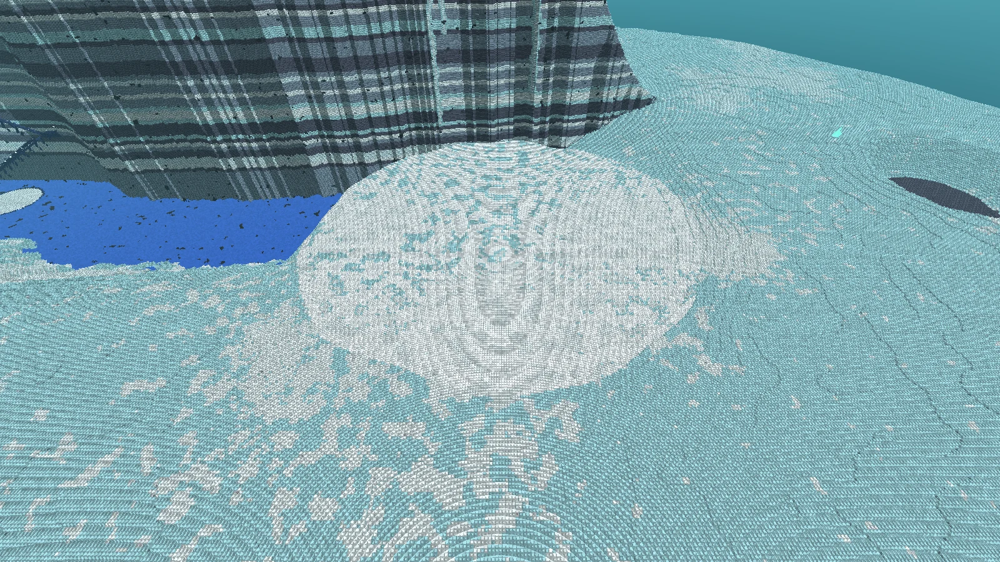
(agrandir l'image)
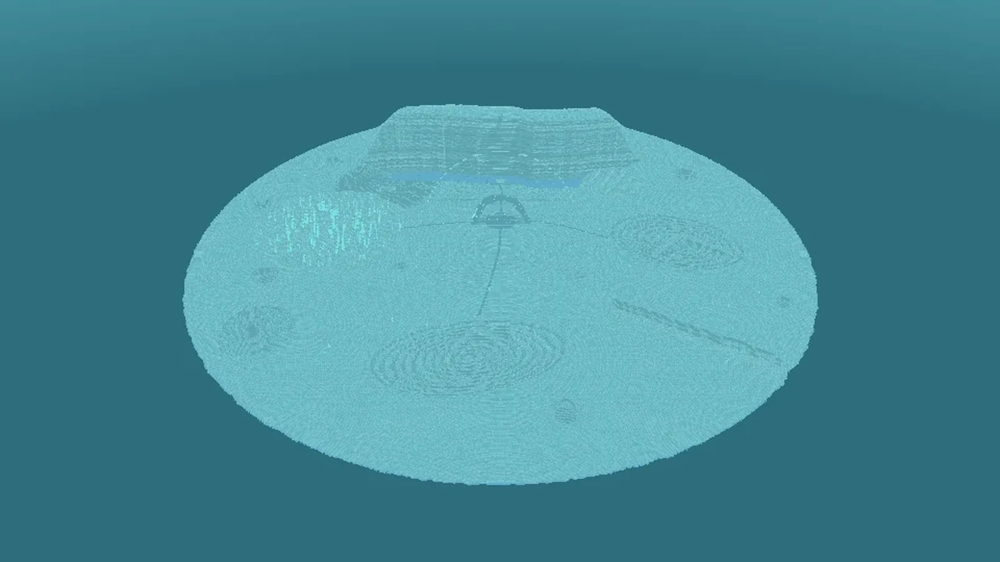
(agrandir l'image)